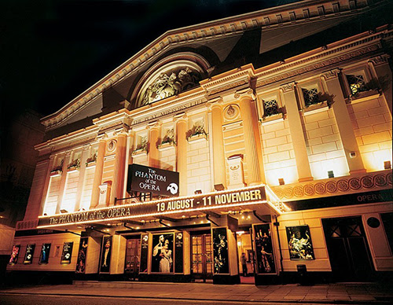
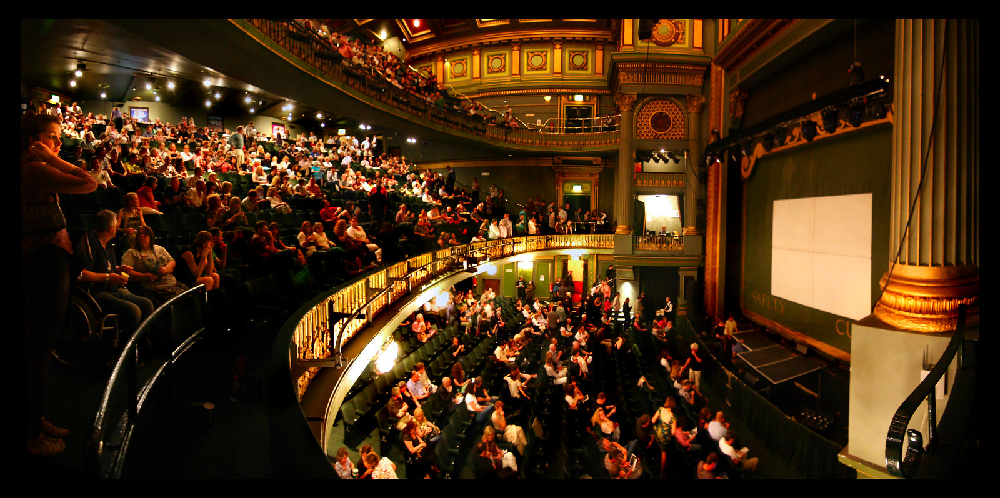
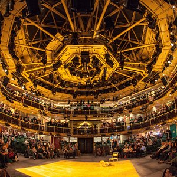

Manchester, England is home to the renowned Manchester Opera House. It is a component of the bigger Quays entertainment complex and is located on Quay Street in the heart of the city. The location is known for presenting a wide range of live events, such as plays, concerts, musicals, and other events.The Manchester Opera House has a long history that begins in the early 1900s. Originally known as the Palace Theatre, it hosted comedy shows when it first opened in 1912. The theatre had numerous name changes and fixes over the years, ending in an important renovation that changed its name to Manchester Opera House in the 1980s.
ARCHITECTURE: The exterior design of Manchester Opera House have alot of features with increadible detailing which include ornate brickwork, decorative cornices and also have an grand entrance. It is Made by an increadible italian style. And the exterior is adorned with a mix of read and terracotta bricks, which make this opera house an eye catching design.The Manchester Opera House's design aims to give visitors a warm and private experience. Every seat in the theatre offers an excellent view of the stage thanks to the seating setup, which is designed like a hoop. Beautiful artwork on the walls of the theatre show scenes from many operas and other plays, while beautiful plasterwork covers the ceiling. Rich reds, golds, and deep blues make up the interior design's warm and inviting colour plan, which communicates power and wealth.
Opera has three types of seating plan first they have stalls:then Circle: and Upper circle: Stalls are the closed seats to the stage, providing the best view of stage and you will to see the performance clearly without any distraction. And the Second One is circle: These seats are located on the first balcony of the opera house, which provide the view of stage from a distant. And these are increadible comfortable to sit on them and eenjoy the performance. Atlast they have the upper circle which is the second balcony providing the view from more distance. And they are not as comfortable as compare to first one. But you can still enjoy the performance from that.
Opera house provide a very comfort and welcoming atmosphere which is really important for the people who are attendong. And Opera house also have so many features and many modren facilities which include well maintain restrooms you can get any drink you want and they have also an fully stocked bar, and also provide the various variety of food option to chose. And the Opera house are also design which allow you to smoke (vape and cigarette) And you can only smoke outside the venue.
Major renovations have been carried out on the Manchester Opera House with the goal of maintaining its unique reach and advancing its facilities. The living areas have been updated, technology has been updated, access parts have been improved, and public comfort has been increased. To ensure that the opera house's original designs survive while adding new technologies smoothly, design companies, conservation specialists, and construction teams have regularly worked together on the renovation work.
The Manchester Opera House went through modernization with the focus on applying environmentally friendly practices to lessen it's environmental effect, upgrading seating arrangements, increasing audio, and adding modern technology for stage plays. To give customers a better experience, efforts have also been made to modernise facilities like restrooms, discounts, and hospitality areas. In addition, the modernization efforts include the introduction of digital ticketing platforms, interactive displays, and further technical advancements intended to attract audiences and elevate their opera house experience overall.
